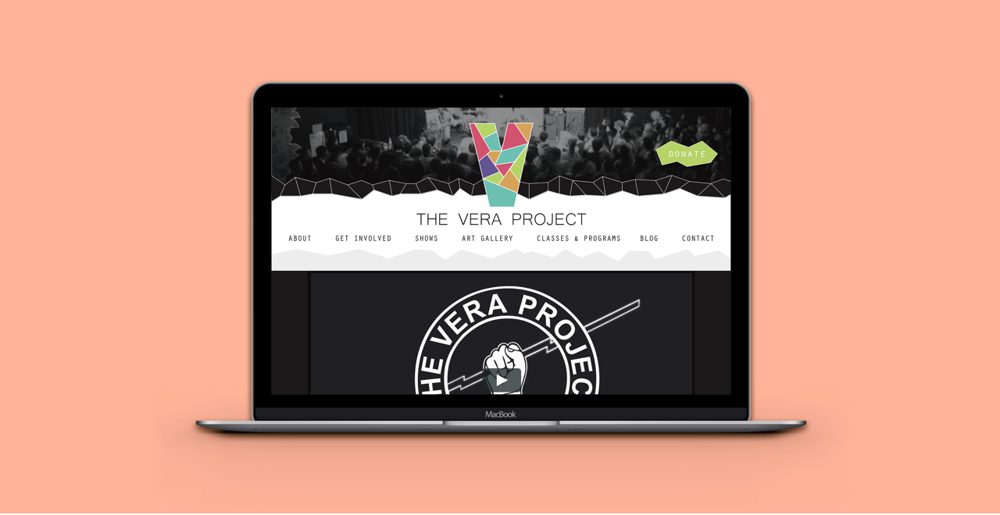

The Vera Project
Skills
What did I do?
For HCDE 308 Visual Communications, I rebranded the Vera Project, a local arts and music venue. In the rebrand, I wanted to convey VP's mission of youth engagement in the arts, creativity, and empowerment.
For HCDE 308 Visual Communications, I rebranded the Vera Project, a local arts and music venue. In the rebrand, I wanted to convey VP's mission of youth engagement in the arts, creativity, and empowerment.